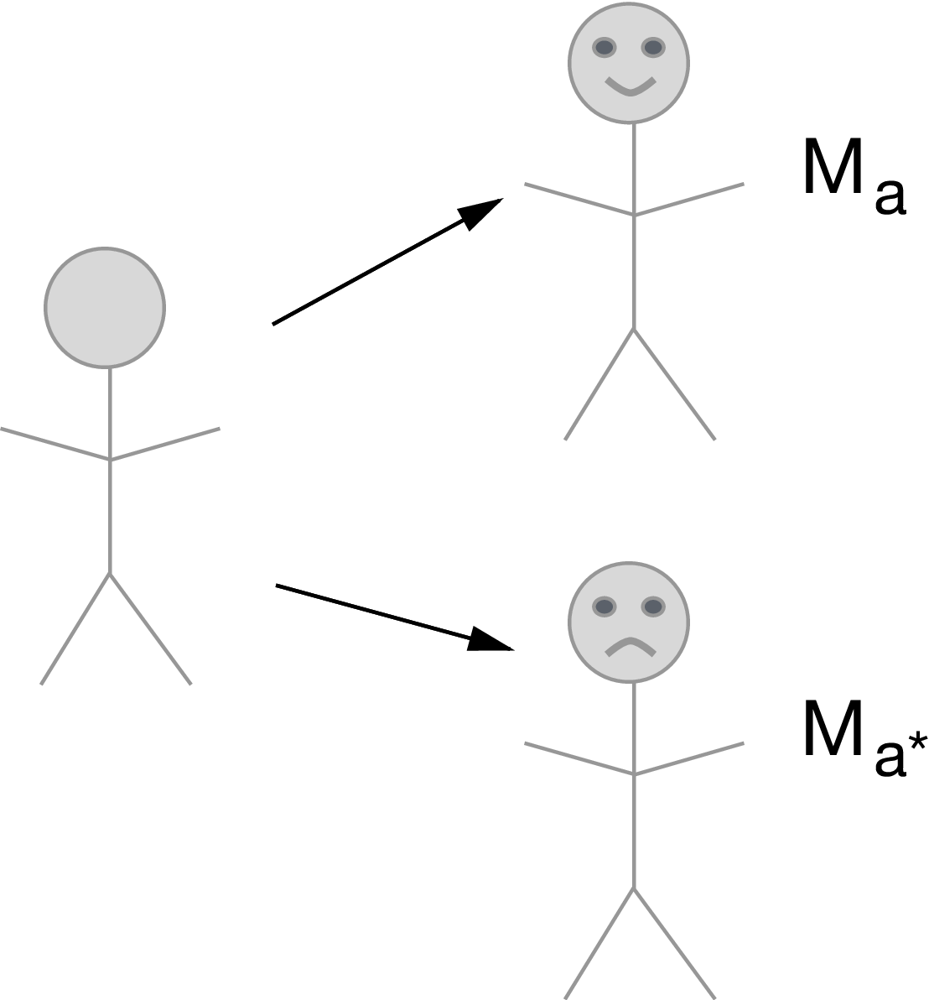

2 Path-specific casual mediation effect types
- Controlled direct effects
- Natural direct and indirect effects
- Interventional direct and indirect effects

FIGURE 2.1: Directed acyclic graph under no intermediate confounders of the mediator-outcome relation affected by treatment
2.1 Controlled direct effects
\[\psi_{\text{CDE}} = \E(Y_{1,m} - Y_{0,m}) \]
- Set \(M=m\) uniformly for everyone in the population
- Compare \(A=1\) vs \(A=0\) with \(M=m\) fixed
Under the below identification assumptions, the controlled direct can be identified: \[ \E(Y_{1,m} - Y_{0,m}) = \E_w\{\E(Y \mid 1, m, w) - \E(Y \mid 0, m, w)\}\]
2.1.1 Identification assumptions:
- Confounder assumptions:
- \(A \indep Y_{a,m} \mid W\)
- \(M \indep Y_{a,m} \mid W, A, Z\)
- Positivity assumptions:
- \(\P(M = m \mid Z, A=a, W) > 0 \text{ } a.e.\)
- \(\P(A=a \mid W) > 0 \text{ } a.e.\)
2.1.2 Is this the estimand I want?
- Makes the most sense if can intervene directly on \(M\)
- And can think of a policy that would set everyone to a single constant level \(m \in \mathcal{M}\).
- J. Pearl calls this prescriptive.
- Can you think of an example?
- Air pollution, rescue inhaler dosage, hospital visits
- Does not provide a decomposition of the average treatment effect into direct and indirect effects
What if our research question doesn’t involve intervening directly on the mediator?
What if we want to decompose the average treatment effect into its direct and indirect counterparts?
2.2 Natural direct and indirect effects
Still using the same DAG as above,
Natural direct effect (NDE): \[\begin{equation*} \psi_{\text{NDE}} = \E(Y_{1,M_0} - Y_{0,M_0}) \end{equation*}\]
Natural indirect effect (NIE): \[\begin{equation*} \psi_{\text{NIE}} = \E(Y_{1,M_1} - Y_{1,M_0}) \end{equation*}\]
If the cross-world assumption holds (defined below), the NDE can also be written as: \(\E_W \sum_m \{\E(Y_{1,m} \mid W) - \E(Y_{0,m} \mid W)\} \P(M_{0}=m \mid W)\)
- Weighted average of controlled direct effects at each level of \(m\).
- If no interaction between \(A\) and \(M\) on \(Y\), then CDE = NDE.
 Under the below identification assumptions, the natural direct effect can be identified: \[\begin{equation*} \E(Y_{1,M_0} - Y_{0,M_0}) = \E_w\{\sum_m \{\E(Y \mid 1, m, w) - \E(Y \mid 0, m, w)\} P(M=m \mid A=0,w)\} \end{equation*}\] (The natural indirect effect can be identified similarly.)
2.2.1 Identification assumptions:
- \(A \indep Y_{a,m} \mid W\)
- \(M \indep Y_{a,m} \mid W, A\)
- \(A \indep M_a \mid W\)
- \(M_0 \indep Y_{1,m} \mid W\)
- and positivity assumptions
What does \(M_0 \indep Y_{1,m} \mid W\) mean?
- Conditional on \(W\), knowledge of \(M\) in the absence of treatment \(A\) provides no information of the effect of \(A\) on \(Y\).
- Can you think of a data-generating mechanism that would violate this assumption?
- Whenever we believe that treatment assignment works through adherence (i.e., almost always), we are violating this assumption.
2.2.2 Is this the estimand I want?
- Makes sense to intervene on \(A\) but not directly on \(M\).
- Want to understand a natural mechanism underlying an association/ total effect. J. Pearl calls this descriptive.
- NDE + NIE = total effect (ATE).
- Okay with the assumptions.
What if our data structure involves a post-treatment confounder of the mediator-outcome relationship (e.g., adherence)?

FIGURE 1.2: Directed acyclic graph under intermediate confounders of the mediator-outcome relation affected by treatment

2.2.3 Unidentifiability of the NDE and NIE in this setting
In this example, natural direct and indirect effects are unidentifiable from observed data on \((W,A,Z,M,Y)\). The technical reason for this is that the cross-world counterfactual assumption \[\begin{equation*} Y(1,m)\indep M(0)\mid W \end{equation*}\]
does not hold in the above directed acyiclic graph. Intuitively, the reason for this is that an intervention setting \(A=1\) (necessary for the definition of \(Y(1,m)\)) induces a counterfactual variable \(Z(1)\). Likewise, an intervention setting \(A=0\) (necessary for the definition of \(M(0)\)) induces a counterfactual \(Z(0)\). The variables \(Z(1)\) and \(Z(0)\) are correlated because they share unmeasured common causes. The variable \(Z(1)\) is correlated with \(Y(1,m)\), and the variable \(Z(0)\) is correlated with \(M(0)\), because they are counterfactual outcomes in the same hypothetical worlds. Thus, to achieve \(Y(1,m)\) independent of \(M(0)\), it would be necessary to adjust for either \(Z(1)\) or \(Z(0)\). This is impossible to do since these variables are unmeasured.
2.3 Interventional (in)direct effects
Let \(G_{M \mid a, W}\) denote a random draw from the distribution of \(M(a) \mid W\)
Define the counterfactual \(Y(1,G_{M \mid 0, W})\) as the counterfactual variable in a hypothetical world where \(A\) is set \(A=1\) and \(M\) is set to \(M=G_{M \mid 0, W}\) with porbability one.
Define \(Y(0,G_{M \mid 0, W})\) and \(Y(1,G_{M \mid 1, W})\) similarly
Then we can define: \[\begin{equation*} \E[Y(1,G_{M \mid 1, W}) - Y(0,G_{M \mid 0, W})] = \underbrace{\E[Y(1,G_{M \mid 1, W}) - Y(1,G_{M \mid 0, W})]}_{\text{interventional indirect effect}} + \underbrace{\E[Y(1,G_{M \mid 0, W}) - Y(0,G_{M \mid 0, W})]}_{\text{interventional direct effect}} \end{equation*}\]
Note that \(G_{M \mid a^{\star}, W}\) represents a stochastic intervention on the mediator, where value \(m\) is drawn with probability \(\P(M = m \mid A = a^{\star}, W = w)\)
Marginal PIDE: \(\E(Y_{a, g_{M \mid a^{\star}, W}}) - \E(Y_{a^{\star}, g_{M \mid a^{\star}, W}})\)
Marginal PIIE: \(\E(Y_{a, g_{M \mid a, W}}) - \E(Y_{a, g_{M \mid a^{\star}, W}})\)
Conditional PIDE: \(\E(Y_{a, g_{M \mid Z, a^{\star}, W}}) - \E(Y_{a^{\star}, g_{M \mid Z, a^{\star}, W}})\)
Conditional PIIE: \(\E(Y_{a, g_{M \mid Z, a, W}}) - \E(Y_{a, g_{M \mid Z, a^{\star}, W}})\)
Can you think of an example when you would want the conditional versions? Marginal versions?
Under the following identification assumptions, the population interventional direct effect is identified: \[\begin{equation*} \E(Y_{1, g_{M \mid 0, W}}) - \E(Y_{0, g_{M \mid 0, W}}) = \E_w \{\sum_{z,m} \{\E(Y \mid 1, z, m, w) P(z \mid 1, w) - \E(Y \mid 1, z, m, w) P(z \mid 0, w)\} P(m \mid A=0, w) \} \end{equation*}\]
2.3.1 Identification assumptions:
- \(A \indep Y_{a,m} \mid W\)
- \(M \indep Y_{a,m} \mid W, A\)
- \(A \indep M_a \mid W\)
- and positivity assumptions.
Is this the estimand I want?
- Makes sense to intervene on \(A\) but not directly on \(M\).
- Goal is to understand a natural mechanism underlying an association or total effect.
- Okay with the assumptions!